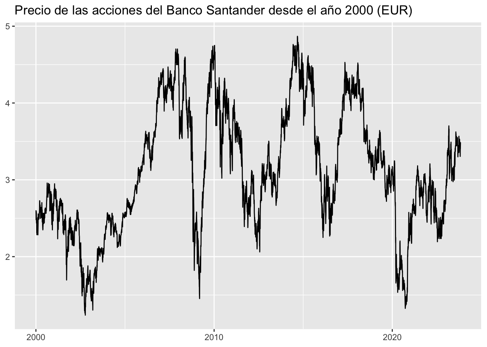
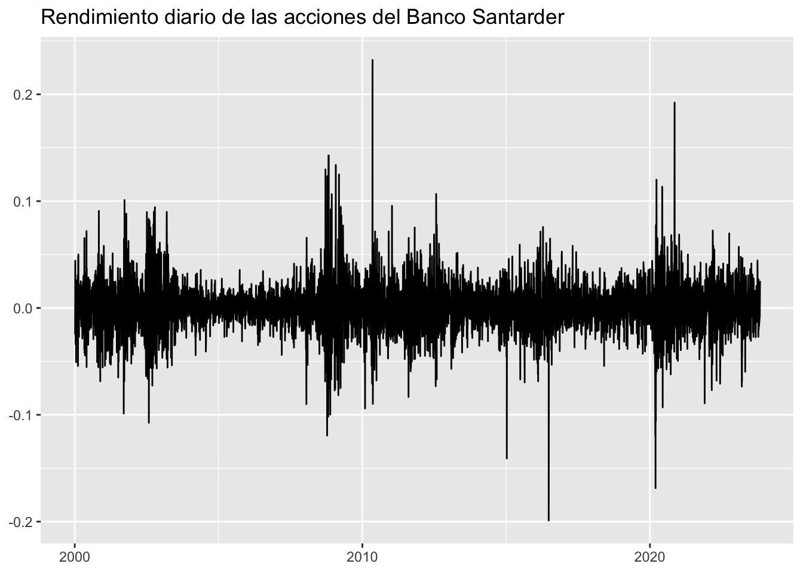
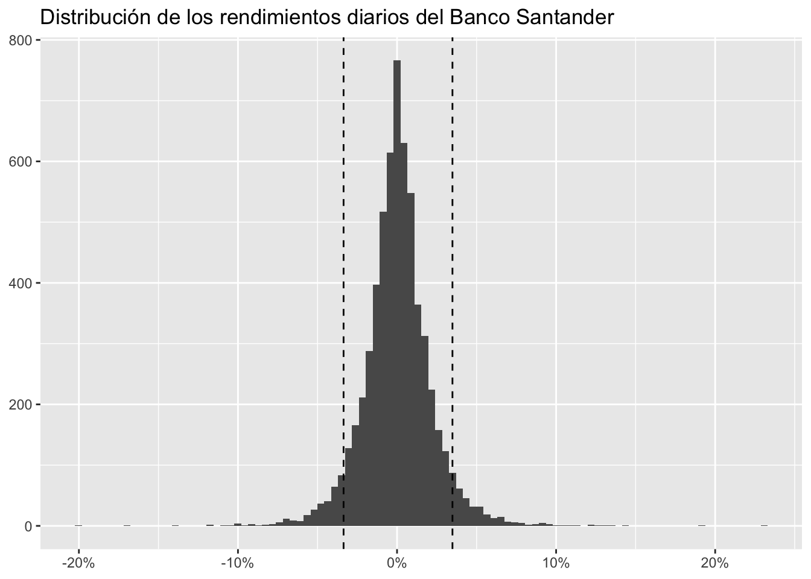
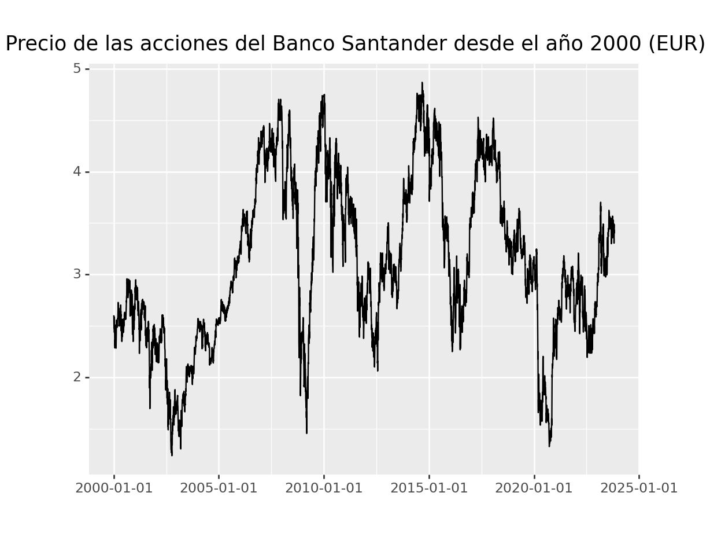
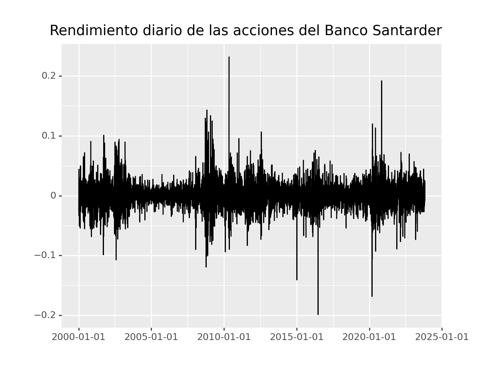
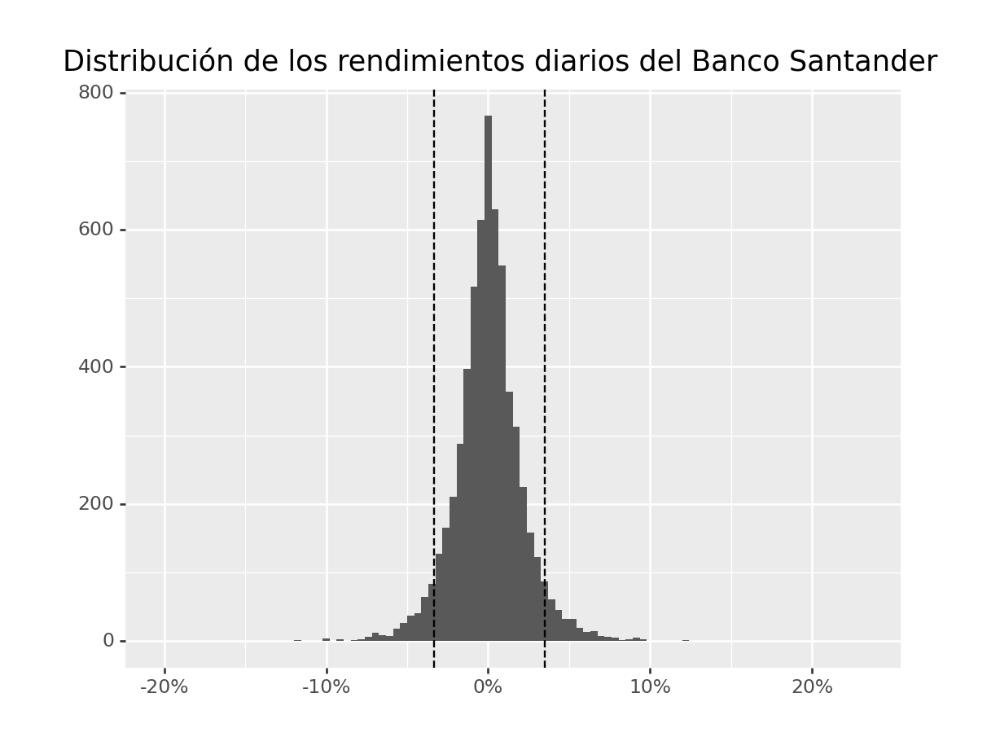

Aplicación 1.2a (Gestión y representación gráfica de datos financieros): Propiedades estadísticas básicas de los activos bursátiles
El objetivo de esta aplicación es familiarizarse con la descarga, manejo y visualización de datos bursátiles procedentes de la plataforma Yahoo!Finanzas, así como entender las propiedades estadísticas básicas de las series temporales asociadas.
Se usará el enfoque tidyverse para este tipo de datos, por lo que esta aplicación puede entenderse como un “análisis financiero ordenado” (tidy finance).
Código R
# Lectura de librerías
library(tidyverse)
library(tidyquant)
library(scales)
#
# Descarga de los datos de un activo bursátil desde Yahoo!Finanzas
#
# Para acceder a los datos diarios del precio de las acciones
# se usa el comando tq_get de la librería tidyquant.
# Solicitaremos los datos del Banco Santander, S.A. (SAN.MC)
# desde el año 2000 hasta la fecha de realización de esta aplicación:
# https://es.finance.yahoo.com/quote/SAN.MC?p=SAN.MC&.tsrc=fin-srch
pSAN <- tq_get("SAN.MC",
get = "stock.prices",
from = "2000-01-01",
to = "2023-10-31"
)
head(pSAN)# A tibble: 6 × 8
symbol date open high low close volume adjusted
<chr> <date> <dbl> <dbl> <dbl> <dbl> <dbl> <dbl>
1 SAN.MC 2000-01-03 9.95 9.99 9.74 9.85 8797337 2.60
2 SAN.MC 2000-01-04 9.73 9.78 9.53 9.62 8811013 2.54
3 SAN.MC 2000-01-05 9.43 9.56 9.30 9.38 9333517 2.48
4 SAN.MC 2000-01-06 9.38 9.38 9.38 9.38 0 2.48
5 SAN.MC 2000-01-07 9.45 9.82 9.44 9.80 9603132 2.59
6 SAN.MC 2000-01-10 9.88 9.88 9.62 9.71 6747710 2.57tail(pSAN)# A tibble: 6 × 8
symbol date open high low close volume adjusted
<chr> <date> <dbl> <dbl> <dbl> <dbl> <dbl> <dbl>
1 SAN.MC 2023-10-23 3.46 3.47 3.39 3.42 178180697 3.34
2 SAN.MC 2023-10-24 3.44 3.44 3.35 3.38 170601157 3.30
3 SAN.MC 2023-10-25 3.40 3.50 3.35 3.46 87290373 3.38
4 SAN.MC 2023-10-26 3.44 3.52 3.41 3.51 32176659 3.43
5 SAN.MC 2023-10-27 3.55 3.56 3.46 3.48 53188968 3.40
6 SAN.MC 2023-10-30 3.5 3.58 3.47 3.57 70729714 3.49# Gráfica de serie temporal: evolución temporal de los precios
pSAN |>
ggplot(aes(x = date, y = adjusted)) +
geom_line() +
labs(
x = NULL,
y = NULL,
title = "Precio de las acciones del Banco Santander desde el año 2000 (EUR)"
)
# Cálculo de los rendimientos netos diarios (returns)
rSAN <- pSAN |>
arrange(date) |>
mutate(ret = adjusted / lag(adjusted) - 1) |>
select(symbol, date, ret)
head(rSAN)# A tibble: 6 × 3
symbol date ret
<chr> <date> <dbl>
1 SAN.MC 2000-01-03 NA
2 SAN.MC 2000-01-04 -0.0237
3 SAN.MC 2000-01-05 -0.0243
4 SAN.MC 2000-01-06 0
5 SAN.MC 2000-01-07 0.0443
6 SAN.MC 2000-01-10 -0.00883tail(rSAN)# A tibble: 6 × 3
symbol date ret
<chr> <date> <dbl>
1 SAN.MC 2023-10-23 -0.0101
2 SAN.MC 2023-10-24 -0.0117
3 SAN.MC 2023-10-25 0.0235
4 SAN.MC 2023-10-26 0.0144
5 SAN.MC 2023-10-27 -0.00854
6 SAN.MC 2023-10-30 0.0254 # Eliminación de datos perdidos (missing data)
rSAN <- rSAN |>
drop_na(ret)
# Evolución temporal de las rentabilidades diarias
rSAN |>
ggplot(aes(x = date, y = ret)) +
geom_line() +
labs(
x = NULL,
y = NULL,
title = "Rendimiento diario de las acciones del Banco Santarder"
)
# Distribución de los rendimientos diarios (detección de asimetrías)
q5 <- quantile(rSAN |> pull(ret), probs = 0.05)
q95 <- quantile(rSAN |> pull(ret), probs = 0.95)
rSAN |>
ggplot(aes(x = ret)) +
geom_histogram(bins = 100) +
geom_vline(aes(xintercept = q5), linetype = "dashed") +
geom_vline(aes(xintercept = q95), linetype = "dashed") +
labs(
x = NULL,
y = NULL,
title = "Distribución de los rendimientos diarios del Banco Santander"
) +
scale_x_continuous(labels = percent)
# Estadística resumen global
rSAN |>
summarize(across(
ret,
list(
media = mean,
desv_típica = sd,
mínimo = min,
máximo = max
)
))# A tibble: 1 × 4
ret_media ret_desv_típica ret_mínimo ret_máximo
<dbl> <dbl> <dbl> <dbl>
1 0.000291 0.0222 -0.199 0.232# Estadística resumen por año
rSAN |>
group_by(year = year(date)) |>
summarize(across(
ret,
list(
media = mean,
desv_típica = sd,
mínimo = min,
máximo = max
),
.names = "{.fn}"
)) |>
print(n = Inf)# A tibble: 24 × 5
year media desv_típica mínimo máximo
<dbl> <dbl> <dbl> <dbl> <dbl>
1 2000 0.000424 0.0230 -0.0686 0.0909
2 2001 -0.000279 0.0252 -0.0988 0.101
3 2002 -0.000757 0.0313 -0.107 0.0943
4 2003 0.00176 0.0209 -0.0558 0.0899
5 2004 0.000135 0.0115 -0.0442 0.0357
6 2005 0.000948 0.00885 -0.0313 0.0356
7 2006 0.00113 0.0110 -0.0348 0.0345
8 2007 0.000419 0.0132 -0.0440 0.0415
9 2008 -0.00200 0.0341 -0.119 0.143
10 2009 0.00295 0.0290 -0.0816 0.134
11 2010 -0.000833 0.0286 -0.0940 0.232
12 2011 -0.000516 0.0239 -0.0833 0.0956
13 2012 0.000911 0.0241 -0.0732 0.107
14 2013 0.000795 0.0164 -0.0570 0.0516
15 2014 0.000704 0.0141 -0.0403 0.0378
16 2015 -0.00121 0.0206 -0.141 0.0593
17 2016 0.000917 0.0278 -0.199 0.0758
18 2017 0.000698 0.0140 -0.0383 0.0582
19 2018 -0.00109 0.0137 -0.0543 0.0373
20 2019 0.0000873 0.0154 -0.0429 0.0429
21 2020 -0.000491 0.0362 -0.169 0.192
22 2021 0.000852 0.0192 -0.0892 0.0687
23 2022 0.000216 0.0221 -0.0769 0.0725
24 2023 0.00140 0.0191 -0.0735 0.0573Código Python
# Lectura de librerías
import numpy as np
import pandas as pd
import matplotlib.pyplot as plt
from plotnine import *
from datetime import datetime
from mizani.formatters import percent_format
import yfinance as yf
import warnings
warnings.filterwarnings("ignore")
#
# Descarga de los datos diarios del precio de las acciones del Santander
#
# Creación del ticker del Banco Santander
SAN = yf.Ticker("SAN.MC")
# Lectura de los datos para el período seleccionado
pSAN = yf.download("SAN.MC", start="2000-01-01", end="2023-10-31")
[*********************100%%**********************] 1 of 1 completedprint(pSAN) Open High Low Close Adj Close Volume
Date
2000-01-03 9.953261 9.987881 9.736886 9.849401 2.603298 8797337
2000-01-04 9.728231 9.780161 9.529166 9.615716 2.541532 8811013
2000-01-05 9.433961 9.555131 9.304136 9.382031 2.479768 9333517
2000-01-06 9.382031 9.382031 9.382031 9.382031 2.479768 0
2000-01-07 9.451271 9.823436 9.442616 9.797471 2.589572 9603132
... ... ... ... ... ... ...
2023-10-24 3.441000 3.442500 3.352500 3.381500 3.304766 170601157
2023-10-25 3.400500 3.501500 3.345000 3.461000 3.382462 87290373
2023-10-26 3.440000 3.520000 3.405500 3.511000 3.431327 32176659
2023-10-27 3.545000 3.563000 3.457500 3.481000 3.402008 53188968
2023-10-30 3.500000 3.576500 3.471500 3.569500 3.488500 70729714
[6123 rows x 6 columns]pSAN = (pSAN.reset_index())
pSAN.head() Date Open High Low Close Adj Close Volume
0 2000-01-03 9.953261 9.987881 9.736886 9.849401 2.603298 8797337
1 2000-01-04 9.728231 9.780161 9.529166 9.615716 2.541532 8811013
2 2000-01-05 9.433961 9.555131 9.304136 9.382031 2.479768 9333517
3 2000-01-06 9.382031 9.382031 9.382031 9.382031 2.479768 0
4 2000-01-07 9.451271 9.823436 9.442616 9.797471 2.589572 9603132pSAN.tail() Date Open High Low Close Adj Close Volume
6118 2023-10-24 3.4410 3.4425 3.3525 3.3815 3.304766 170601157
6119 2023-10-25 3.4005 3.5015 3.3450 3.4610 3.382462 87290373
6120 2023-10-26 3.4400 3.5200 3.4055 3.5110 3.431327 32176659
6121 2023-10-27 3.5450 3.5630 3.4575 3.4810 3.402008 53188968
6122 2023-10-30 3.5000 3.5765 3.4715 3.5695 3.488500 70729714# Gráfica de serie temporal: evolución temporal de los precios
(
ggplot(pSAN, aes(y="Adj Close", x="Date"))
+ geom_line()
+ labs(x="", y="", title="Precio de las acciones del Banco Santander desde el año 2000 (EUR)")
)<ggplot: (322842294)>
# Cálculo de los rendimientos netos diarios
def ret(x):
x_change = (x/x.shift(1)-1)
return x_change
pSAN['ret'] = ret(pSAN['Adj Close'])
pSAN['ret']0 NaN
1 -0.023726
2 -0.024302
3 0.000000
4 0.044280
...
6118 -0.011691
6119 0.023510
6120 0.014447
6121 -0.008545
6122 0.025424
Name: ret, Length: 6123, dtype: float64# Cálculo alternativo de la rentabilidad diaria
ret2 = (pSAN
.sort_values("Date")
.assign(ret2 = lambda x: x["Adj Close"].pct_change())
.get(["Date", "ret2"])
)
ret2.head() Date ret2
0 2000-01-03 NaN
1 2000-01-04 -0.023726
2 2000-01-05 -0.024302
3 2000-01-06 0.000000
4 2000-01-07 0.044280# Eliminación de datos perdidos (missing data)
pSAN = pSAN.dropna()
# Evolución temporal de las rentabilidades diarias
(
ggplot(pSAN, aes(y="ret", x="Date"))
+ geom_line()
+ labs(x="", y="", title="Rendimiento diario de las acciones del Banco Santarder")
)<ggplot: (322911833)>
# Distribución de los rendimientos diarios (detección de asimetrías)
q5 = pSAN["ret"].quantile(0.05)
q95 = pSAN["ret"].quantile(0.95)
(
ggplot(pSAN, aes(x="ret"))
+ geom_histogram(bins=100)
+ geom_vline(aes(xintercept=q5), linetype="dashed")
+ geom_vline(aes(xintercept=q95), linetype="dashed")
+ labs(x=None, y=None, title="Distribución de los rendimientos diarios del Banco Santander")
+ scale_x_continuous(labels=percent_format())
)<ggplot: (322950631)>
# Estadística resumen global
pSAN["ret"].describe()count 6122.000000
mean 0.000295
std 0.022250
min -0.198864
25% -0.010764
50% 0.000000
75% 0.010888
max 0.232166
Name: ret, dtype: float64# Selección de estadísticos y precisión
est_res = pSAN['ret'].agg({
'media': 'mean',
'desv_típica': 'std',
'mínimo': 'min',
'máximo': 'max'
})
est_res.round(4)media 0.0003
desv_típica 0.0222
mínimo -0.1989
máximo 0.2322
Name: ret, dtype: float64# Estadística resumen por año
pSAN["ret"].groupby(pSAN["Date"].dt.year).describe() count mean std ... 50% 75% max
Date ...
2000 259.0 0.000424 0.022951 ... 0.000000 0.014402 0.090854
2001 261.0 -0.000279 0.025248 ... 0.000000 0.014374 0.101011
2002 261.0 -0.000757 0.031266 ... 0.000000 0.015038 0.094340
2003 261.0 0.001760 0.020850 ... 0.000000 0.011713 0.089888
2004 262.0 0.000135 0.011547 ... 0.000000 0.006670 0.035714
2005 260.0 0.000948 0.008852 ... 0.000923 0.005877 0.035646
2006 255.0 0.001134 0.010973 ... 0.001440 0.008154 0.034546
2007 255.0 0.000419 0.013181 ... 0.000697 0.008081 0.041507
2008 254.0 -0.002003 0.034099 ... -0.002576 0.013783 0.143284
2009 254.0 0.002950 0.028959 ... 0.003462 0.017250 0.133913
2010 256.0 -0.000833 0.028594 ... -0.000615 0.011564 0.232166
2011 257.0 -0.000516 0.023928 ... -0.001449 0.012061 0.095599
2012 256.0 0.000911 0.024094 ... 0.001128 0.012814 0.106749
2013 255.0 0.000795 0.016403 ... 0.000329 0.010241 0.051650
2014 255.0 0.000704 0.014124 ... 0.000616 0.009475 0.037773
2015 256.0 -0.001209 0.020640 ... 0.000304 0.009400 0.059319
2016 257.0 0.000917 0.027789 ... 0.002039 0.015687 0.075822
2017 255.0 0.000698 0.014017 ... 0.000866 0.008121 0.058201
2018 254.0 -0.001001 0.013758 ... -0.001448 0.007173 0.037286
2019 256.0 0.000087 0.015410 ... -0.001028 0.009087 0.042904
2020 257.0 -0.000491 0.036154 ... -0.004403 0.019257 0.192221
2021 256.0 0.000852 0.019230 ... 0.000943 0.012088 0.068725
2022 257.0 0.000216 0.022138 ... -0.000956 0.013416 0.072488
2023 213.0 0.001404 0.019096 ... 0.001115 0.014208 0.057257
[24 rows x 8 columns]# Selección de estadísticos y precisión
pSAN['year'] = pSAN["Date"].dt.year
est_anual = pSAN.groupby('year').agg({'ret': ['mean', 'std', 'min', 'max']})
est_anual.round(4) ret
mean std min max
year
2000 0.0004 0.0230 -0.0686 0.0909
2001 -0.0003 0.0252 -0.0988 0.1010
2002 -0.0008 0.0313 -0.1074 0.0943
2003 0.0018 0.0209 -0.0558 0.0899
2004 0.0001 0.0115 -0.0442 0.0357
2005 0.0009 0.0089 -0.0313 0.0356
2006 0.0011 0.0110 -0.0348 0.0345
2007 0.0004 0.0132 -0.0440 0.0415
2008 -0.0020 0.0341 -0.1194 0.1433
2009 0.0030 0.0290 -0.0816 0.1339
2010 -0.0008 0.0286 -0.0940 0.2322
2011 -0.0005 0.0239 -0.0833 0.0956
2012 0.0009 0.0241 -0.0732 0.1067
2013 0.0008 0.0164 -0.0570 0.0516
2014 0.0007 0.0141 -0.0403 0.0378
2015 -0.0012 0.0206 -0.1409 0.0593
2016 0.0009 0.0278 -0.1989 0.0758
2017 0.0007 0.0140 -0.0383 0.0582
2018 -0.0010 0.0138 -0.0543 0.0373
2019 0.0001 0.0154 -0.0429 0.0429
2020 -0.0005 0.0362 -0.1686 0.1922
2021 0.0009 0.0192 -0.0892 0.0687
2022 0.0002 0.0221 -0.0769 0.0725
2023 0.0014 0.0191 -0.0735 0.0573